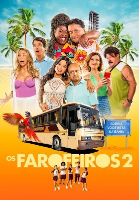

O gênero que fara você dar risadas e se divertir em suas piádas

Em Os Farofeiros 2, acompanhamos um novo capítulo da história dos amigos Alexandre (Antônio Fragoso), Lima (Maurício Manfrini), Rocha (Charles Paraventi) e Diguinho (Nilton Bicudo). Quando Alexandre é reconhecido como o melhor gerente de vendas na empresa em que trabalha, ele ganha como recompensa por seus esforços uma viagem para a Bahia com toda a família. Porém, os outros três amigos não estão muito felizes com a forma como Alexandre comanda as coisas. Para tentar amolecer o coração dos amigos e garantir sua tão esperada promoção, ele resolve levar todos - acompanhados das esposas e dos filhos - para a viagem ao Nordeste.
Duração: 1 hora e 44min
Classificação indicativa: 12 anos
Seres amarelos milenares, os minions têm uma missão: servir os maiores vilões. Em depressão desde a morte de seu antigo mestre, eles tentam encontrar um novo chefe. Três voluntários, Kevin, Stuart e Bob, vão até uma convenção de vilões nos Estados Unidos e lá se encantam com Scarlet Overkill (Sandra Bullock), que ambiciona ser a primeira mulher a dominar o mundo.
Duração: 1 hora e 31min
Classificação indicativa: Livre para todas as idades